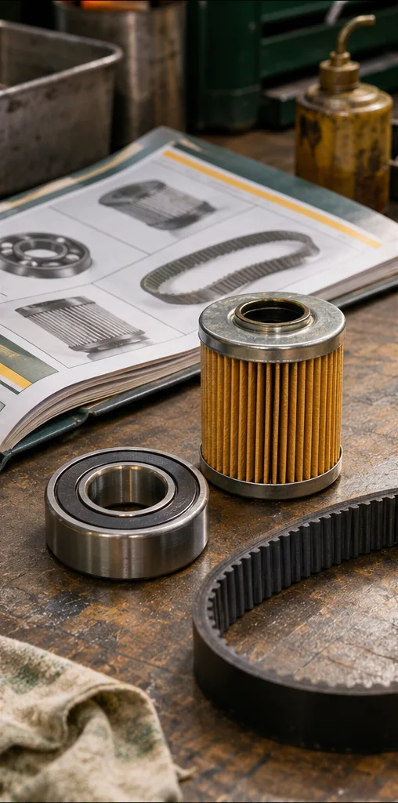

Prepare o material
Confira o saldo necessário por ordem antes de separar o kit. A reserva fica registrada no estoque da demonstração.

Saldo da bancada
O material separado sai do saldo disponível.
Kits por ordem
Comece por uma visita planejada.
Separar material
Voltar às ordens e aos saldos iniciais?